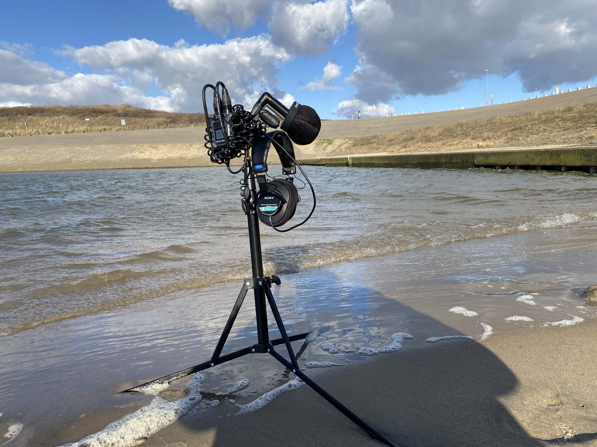

Welcome to my diary where I share my adventures in field recording, the battles with perfectionism, and the raw, beautiful moments captured along the way.
Field Recording at Katwijkse Uitwatering: Where Sweet Water Meets Salt and Wind
Posted on March 14, 2025
Today, I embarked on a quest to capture the unique soundscape of Katwijkse Uitwatering, where the fresh flow of the Old Rhine converges with the salty sea. Equipped with my trusted Zoom F3 and Line Audio CM4s in an ORTF configuration, I was ready to explore every sonic nuance.
Although the day was bright and sunny, the chill wind and biting cold created unexpected challenges. My microphones, aimed downward to catch the delicate whispers of the waves, struggled as my tripod’s feet sank into soft, almost quicksand-like ground.
I found myself torn between capturing the powerful crash of waves on the dock or the gentle murmur as they reached the sandy uitwatering. My Movo windscreens did their best, though not flawlessly, pushing me to take risks with my gear.
At one point, I even waded into the water—my Meindle boots quickly filling—a daring reminder that sometimes you have to risk a little to capture something truly special.

Mid-session, an unexpected idea struck: why not record the sound of wind sweeping sand off the pavement? After repositioning my tripod three times amid the shifting conditions, I left with one clear thought—every sound has its own story, leaving me to wonder, "Is wind our biggest enemy or our best friend in field recording?"
Field Recording at Strand Wassenaarseslag: Capturing Waves and Foam
Posted on March 12, 2025
Today’s session at Strand Wassenaarseslag immersed me in the rhythms of the sea. I began with a touch of worry—would the strong tide and gusty wind topple my tripod? Yet, the quiet, reflective atmosphere soon put my concerns at ease.
I set up my usual rig—a Zoom F3 with Line Audio CM4 mics in an ORTF configuration on my Manfrotto 5001B Nano Stand—and tested out the new Movo WST50 Ballistic Nylon Windscreens, which outperformed my old WS8 Rode windscreens. Small ideas, like adding a hook for my headphones or configuring remote listening from 5–10 meters away, kept me thinking throughout the session.
As I recorded, the ocean’s deep, rolling rhythm blended with the delicate hiss of foam breaking on the shore, even as a light rain began. It was a constant, compelling melody that filled the space with raw energy.
After about 45 minutes of recording, I sat on the damp sand, completely absorbed by the pure sound of the sea. The experience reminded me that sometimes letting go of perfection reveals the most genuine, unedited moments.
Field Recording at Landje van Bremmer: Practical Challenges & Clear Insights
Posted on March 6, 2025
My very first field recording session at Landje van Bremmer was an adventure from the start. I had to hop a fence—dodging a potential run-in with an upset farmer—to reach the spot, which set the tone for an unforgettable experience.
The field was muddy and dotted with curious sheep, adding an unexpected charm to the day. A quick tip for fellow recordists: skip the jeans in such conditions; they quickly become a liability in the wet, soggy environment.
Though I was initially concerned about the wind, post-production took care of any unwanted low-frequency noise with a high-pass filter. Setting up my familiar rig—a Zoom F3 with Line Audio CM4 mics in ORTF on my Manfrotto 5001B Nano Stand, complemented by WS8 Rode windscreens—helped me focus on the moment.
The soundscape was alive with the honks of geese, the rustle of reeds, and a medley of ambient natural sounds, each adding its own layer to the balanced backdrop of the day.
Ultimately, this session became an exercise in embracing unpredictable conditions and letting go of perfection. It reinforced the idea that field recording is about capturing real moments—even if they aren’t flawless.